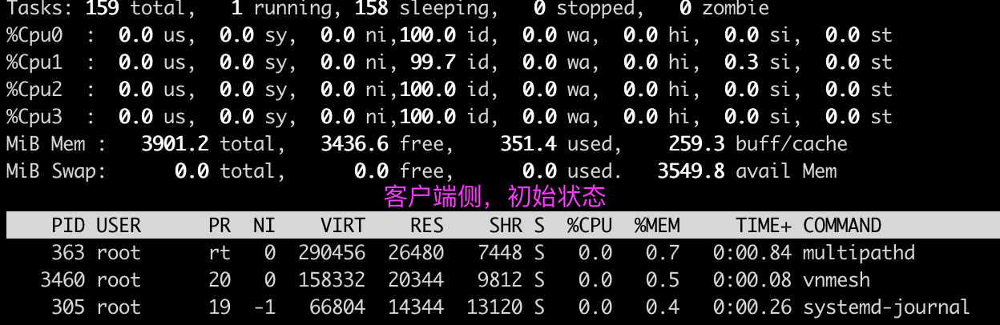
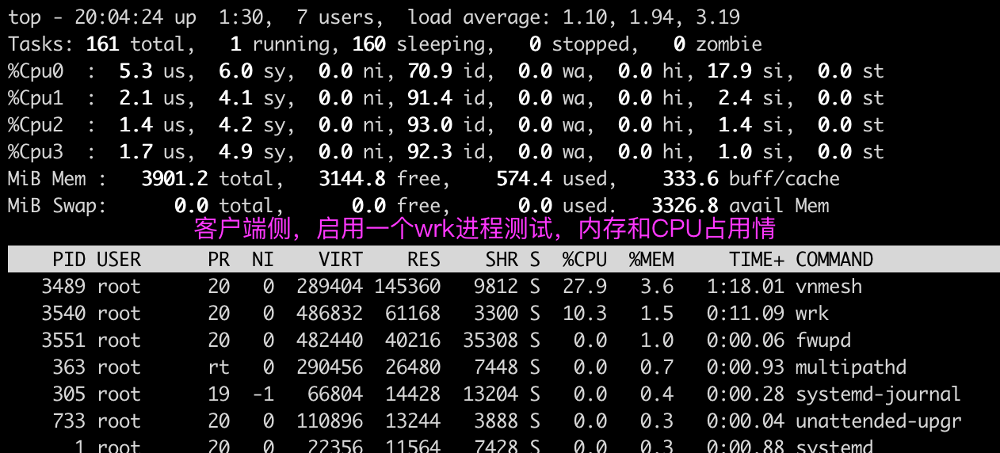
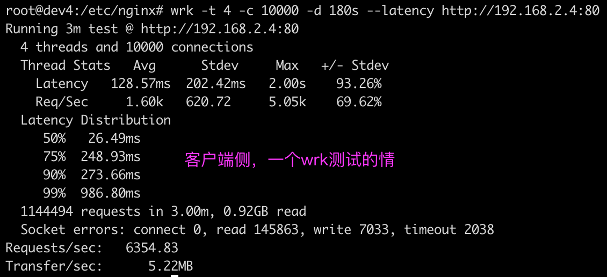
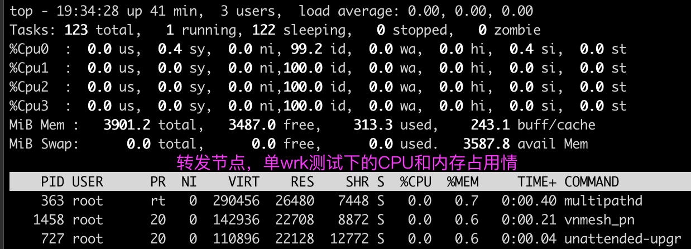
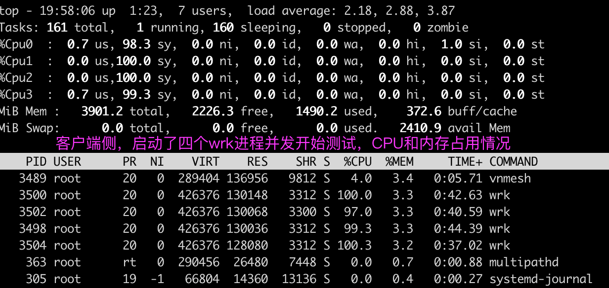
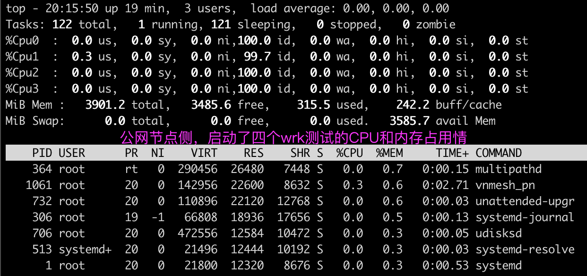
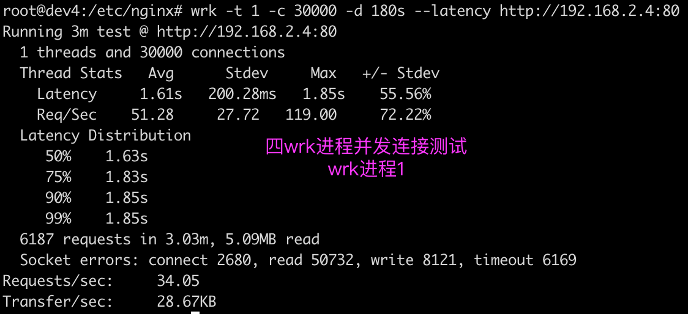
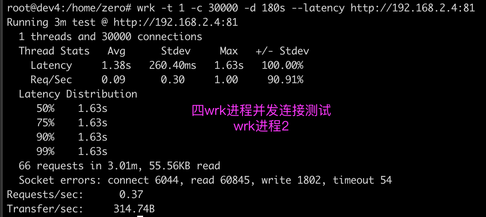
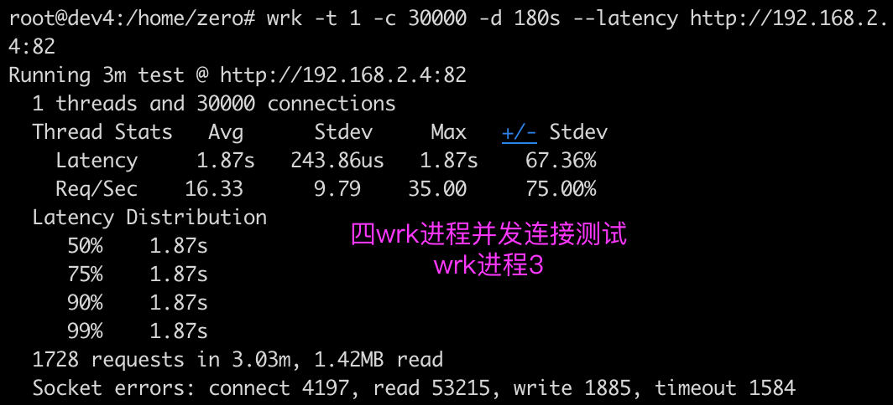
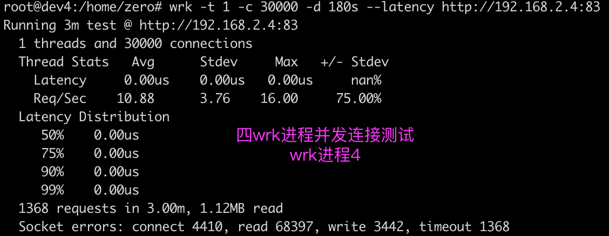

设备映射性能测试报告
测试环境
测试目标：测试转发服务器的连接并发能力
测试环境：在Mac mini m4 pro上用multipass启动了两个ubuntu 24.04虚拟机, 一个虚拟机作为客户端和访问者，另一个作为转发节点。两个虚拟机都是4核4G内存。
客户端侧初始CPU和内存占用情况:

启动单个wrk，一万并发连接测试
客户端侧CPU和内存占用情况:

wrk的情况:

转发节点的CPU和内存占用情况, 可以看到CPU和内存使用情况良好:

启动4个wrk，十万并发连接测试
客户端侧CPU和内存占用情况, 可以看到wrk CPU使用率已经达到极限:

转发节点的CPU和内存占用情况, 可以看到CPU和内存使用情况依然良好:

wrk的情况, 可见共有102669条并发连接:




测试结论
对于转发节点，承载十万并发连接非常轻松，vnmesh_pn的CPU使用率在0.3%, 内存使用22M, 距离转发节点的极限还很远。
客户端侧先达到瓶颈，wrk和vnmesh都会占用较多的内存(都在130M左右), wrk的CPU使用率最先达到瓶颈。
客户端侧依然有优化空间, 这是下一步的目标, 预计可以将vnmesh客户端的内存降低到 30M 以内
极限测试
使用10台虚拟机作为客户单和wrk, 测试100万并发连接, 转发节点CPU(1%)和内存情况(36M)依然良好
使用100台虚拟机作为客户单和wrk, 测试1000万并发连接, 转发节点CPU(低于10%)和内存情况(150M)依然良好
使用物理机PPS压力测试，极限压力下可达到7000万PPS转发能力, CPU使用率低于20%
参考
基于KLC项目做了大量的内存拷贝优化和硬件加速并实现了自主协议, 极大的优化了VNMesh性能。
使用相同的优化方案，对OVS进行转发性能优化，在2张25G mlx CX4 网卡上达到了9000万PPS线速转发性能，并且CPU使用率低于5%。